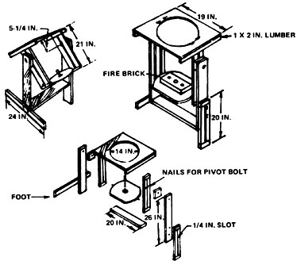
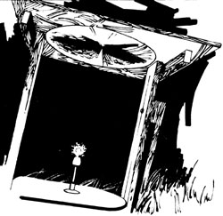

A Solar Furnace
Most of us learned at an early age that a magnifying glass would do more than simply enlarge the type in a book.To understand why we use the type of mounting shown, it will be a good idea to consider just how the sun moves across the sky during the day.
D.S. HALACY
July/August 1974
©1959 by D.S. Halacy, Jr., and originally published by the Macmillan Company as a chapter of the book, Fun With
The Sun. Reprinted by permission of the author.
Most of us learned at an early age that a magnifying glass would do more than simply enlarge the type in a book. A converging lens magnifies heat as well: that is, it concentrates the sun's rays into a small space. By changing a relatively large amount of warmth into a small amount of heat, we can burn our initials in wood, start a campfire or-as with our reflector stove-cook a meal. It is this same principle of concentration that makes possible the huge solar furnaces in operation today. A lens, or mirror-whichever the case may be-intercepts a certain amount of sunlight, focuses all of its heat energy onto a tiny spot and thus produces temperatures as high as 6,500° Fahrenheit.
Centuries ago, scientists were able to melt metals at temperatures inthe neighborhood of 2,000° F even with the comparatively crude furnaces they were then able to construct. Modern technology has made it possible for the solar furnace to create the hottest temperatures available to man for any appreciable length of time. Of course, such methods as the "shock tube" and plasma jet techniques do produce higher temperatures . . . but only at great cost and for limited periods of time.
In France a 35-foot solar furnace has operated for many years, and has performed satisfactorily in melting metals for industrial use. The largest furnace in the United States today is that of the Army Quartermaster Corps, which is about the same size.
Obviously these monster units cost fortunes to erect, but anyone can build himself (or herself) a workable solar furnace for about ten dollars and in a few hours. Far from being a toy, the result is a practical tool that will melt metals with fairly low melting points, do soldering jobs and even heat a kiln for firing ceramic jewelry.
Back in 1770 the French experimenter, Lavoisier, had convex lenses made especially for him by the same St. Gobain glassworks that is still in operation today. These curved pieces of glass were joined together at their rims and filled with wine to make them equivalent to solid lenses. Light passing through them was refracted or bent in toward a common focal point to heat whatever samples the scientist placed there.
A convex glass lens of the size needed for our furnace would cost far too much for the average budget, but fortunately there is a substitute. There's a clever way of making a thin, grooved piece of plastic-called a Fresnel lens-take the place of the much more expensive glass unit.
As Fig. 1 shows, the curved surface of the lens is cut into small segments of equal height, and in effect is flattened out into the thin form shown. While cutting such a lens from glass is costly, plastic Fresnel lenses are made for a reasonable price from a master form. The one used in our project costs six dollars, and therefore gives about 300 degrees of heat for each dollar spent!
We could, of course, immediately begin to use our lens for melting, soldering and so forth, much as we would use a smaller burning lens. But holding the lens in one's hands and trying to keep it accurately focused on the specimen would soon tire the most ardent experimenter. A necessary part of our furnace, then, is its mounting.
To understand why we use the type of mounting shown, it will be a good idea to consider just how the sun moves across the sky during the day. We are designing a furnace to move with the sun. Because the Earth rotates on its north-south axis, the apparent movement of the sun is at right angles to this. It "rises" in the east and "sets" in the west. (This is a simplification, and readers familiar with astronomy know the actual movements are somewhat more complicated.) Further, the sun seems to move approximately along a parallel of latitude which is called its declination-in its daily journey. We are all acquainted too with the sun's movement south during the winter and back north in the summer . . . but now we are considering just one day's motion of that body.
For greatest usefulness our mounting should be one that will easily "track" or follow the sun, and for this purpose the equatorial mounting is ideally suited. This is the type used in telescopes, so designed that a motor turning at the right speed will keep a star or other body continually in the telescope's field of vision. Of course, in our simple solar furnace we will not include such an automatic system, but the large furnaces operate in this way or with a photoelectric device that keeps the sun's image properly positioned.
Set up correctly, our furnace mounting is so designed that we have only to tip the swinging part to follow the sun. In practice we will find that since the sun moves only about one degree in four minutes we can often accomplish our soldering, melting or other operation without moving the lens. However, at times the convenience of the equatorial mount is desired.
Now that we have briefly discussed the theory of operation of our furnace, let's get busy and build it. First, of course, see that everything is on hand before you begin. That way the job won't take long and you'll soon have your furnace in operation.
MATERIALS
1 -by-4-inch lumber (approximately 16 feet)
3/4-inch plywood (19 by 19 inches)
1-inch wood screws (16)
1/4-by-4-inch studs and wing nuts (six)
1/4-by-2-inch bolts and wing nuts (four)
14-inch-diameter Fresnel lens (one)
1/4-inch chuck (one)
Firebrick (one for kiln)
A Fresnel lens of the type we mentioned (made of thin plastic) may be obtained from the Edmund Scientific Corporation 300 Edscorp Building, Barrington, New Jersey 08007. Edmund also furnishes information on building other types of solar furnaces. Check with your photographic supply dealer and surplus stores for other suitable Fresnel lenses. A thicker, rigid type of rectangular shape is sometimes available and is more durable than the thin plastic. The firebrick kiln may be of any type that will stand the great heat developed at the focal point.
Use a good grade of wood for the various parts of the furnace's framing. The use of cheap lumber-which warps-is poor economy. In addition to the materials listed, we will need a drill, saw and screwdriver.
With a piece of string, mark a 14-inch-diameter circle on the 19-inch square of plywood, as shown in Fig. 2. Make sure the circle is centered accurately. Drill a starting hole just inside the line, and use a keyhole saw to cut out the center. Save this piece of scrap for the worktable of the furnace on which we will later mount the kiln and adjustable chuck.
Next cut the 1-by-2 strips that form the swinging frame, making sure all ends are square. Assemble with wood screws to form the slotted track that permits adjustment of the worktable. Drill holes in two places in each assembly for the finishmg nails that form bearings for the pivot bolts. Double check to see that the slots are wide enough for the 1/4-inch studs to slide smoothly up and down, and set these parts aside.
Now drill four holes in the plywood lens frame for the mounting studs as shown in Fig. 2. Carefully place the slotted parts in position and mark matching holes in their top ends. Drill these pieces out for the studs and screw them in place. Leave enough of each stud protruding above the plywood for a washer and wing nut, plus several extra threads for mounting the lens in case you use the "glass sandwich" method to be described.
Next cut the three pieces of lumber that form the yoke for holding the swinging frame. Assemble the "U" and nail the square spacer blocks in place on the top, inside surface of the sidepieces. Drill 1/4-inch holes for the pivot bolts through the sidepieces and spacer blocks. Attach the foot with four wood screws so that the yoke will stand upright, and drill two 1/4-inch holes in the sidepiece opposite the foot. These holes are for the bolts that hold the sliding declination adjustment piece, which may now be slotted as shown on the drawing.
If you have a drill press and a reamer-type drill bit that cuts on the side, this slotting operation will be simple. If not, it may be done by drilling separate holes as close together as possible, and then cleaning them out with a keyhole saw or a chisel. Go ahead and fit the sliding piece to the yoke with bolts, washers and wing nuts.
Now we can come back to the circular piece left from the center of the lens frame. Trim the sides straight to eliminate the starting hole, and then drill two holes on opposite sides to recieve studs. Insert the studs. The worktable can now be attached to the side supports by means of washers and wing nuts.
Place the lens frame in position and slide the pivot bolts between the finishing nails to complete assembly of the mount. All that remains to be done is to install the lens. There are two ways of doing this.
It is possible to simply glue the lens in place with an adhesive such as Goodyear Pliobond. An alternate method is to place the lens between two thicknesses of window glass and attach it to the lens frame by means of the washers and wing nuts.
If you want to use the gluing method, follow these instructions carefully: Remove the frame from the mount and apply thin coats of glue to the area to be covered by the lens. Several coats may be required to fill the pores of the wood. Add one more coat and let dry for a minute or so. This final coat should be brushed out carefully so that it is uniform and not too thick; otherwise the plastic lens will not adhere properly or puff tight the way it should for best results.
Very gently place the lens in position on the frame, keeping it smooth, but without trying to stretch it. Be sure that the grooved side of the lens is up, or the furnace will not operate! With the lens in place, set the frame aside to dry for a day.
Because the Fresnel lens is plastic and can easily be damaged, a good way to add to its life is to sandwich it between two sheets of glass of the proper size (see Fig. 3). If it's available, use "water-white" glass for this method of attaching your Fresnel lens. When not in use the lens can be removed and stored for safekeeping. Another advantage is that the lens is held more nearly in a plane than it is in the gluing method. Unfortunately the glass does cut down the amount of heat transmitted through the lens, so the choice is between [1] high temperature and [2] durability.
If you plan to use your furnace only for soldering, jewelry work and so on, you may want just the firebrick kiln. With a masonry drill, bore two holes through both the brick and the worktable so that the first may be bolted to the second. If you don't have such a drill, the brick can be wired in place. For jewelry work it's handy to drill a shallow hole in the brick to hold small pieces.
For experimental work it's also handy to have the adjustable chuck setup shown in Fig. 4. Metal samples are then easily placed at the focal point. A chuck from a discarded hand drill will serve the purpose, along with a length of rod threaded to fit the chuck. A mounting flange is screwed to the worktable to receive the rod, which may be adjusted to position the chuck as required. Of course the firebrick will have to be removed for this operation.
Using the furnace is quite simple. Place the mount with the foot toward the south (unless you live in the Southern Hemisphere), loosen the pivot wing nuts and tip the lens frame toward the sun. Wear dark glasses whenever you're using the furnace because the bright spot at the focal point can harm unprotected eyes.
Now adjust the sliding declination bar until the image from the lens is centered on the worktable. It's a good idea to have the firebrick in place when setting up the first time so that you won't burn holes in the worktable.
Tighten the wing nuts that hold the mount in place. Loosen those holding the worktable and slide it back and forth until the bright spot in the firebrick kiln is at its smallest. The furnace is now focused, and the temperature should be close to 2,000 degrees F with bright sun. You will understand now why we've made the table adjustable so that we purposely may shift the focus for less heat. Experience will be the best teacher here. Meantime, be careful of hands and eyes when you use the furnace.
|
 Fig. 1 Principle of the Fresnel lens. |
 Solar furnace |
 Fig. 4 Furnace in action. Meta specimen is being oxidized. |